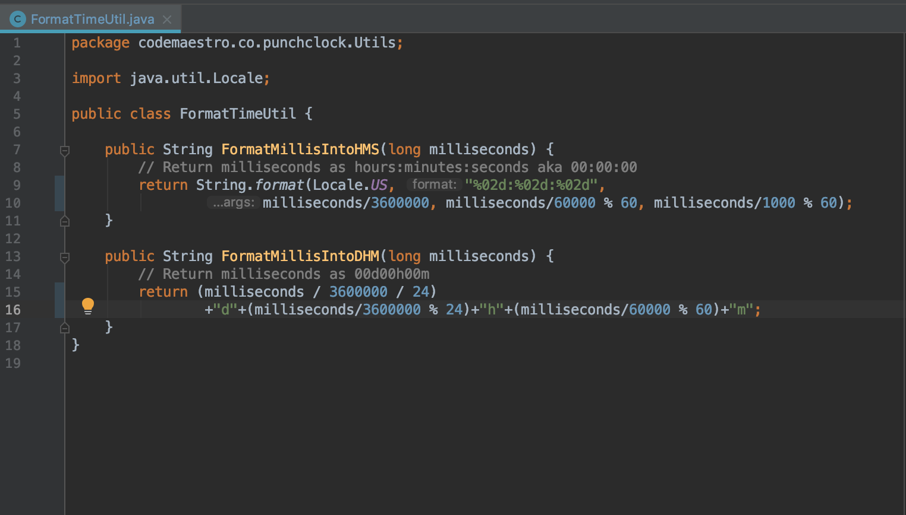

Punch Clock is a time keeping app me and my friend worked on. The app allows you to make "categories" in which the user can then enter time entries into. An example might be keeping track of your hours or working towards a goal of a certain amount of hours per week. I learned a ton about Java and Android programming with this application.
FormatTimeUtil.java is a simple Java class I made for formatting numbers into a one of two different formats for displaying time. It has two methods, one for converting a long value into the format of "hh:mm:ss" and another for "00d00h00m". This class was used to format the display of the total time entered into a category and various instances of timers.